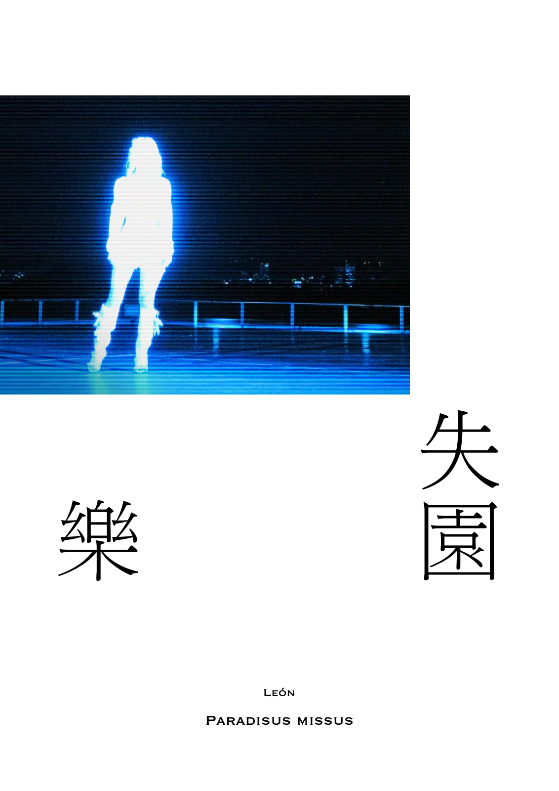
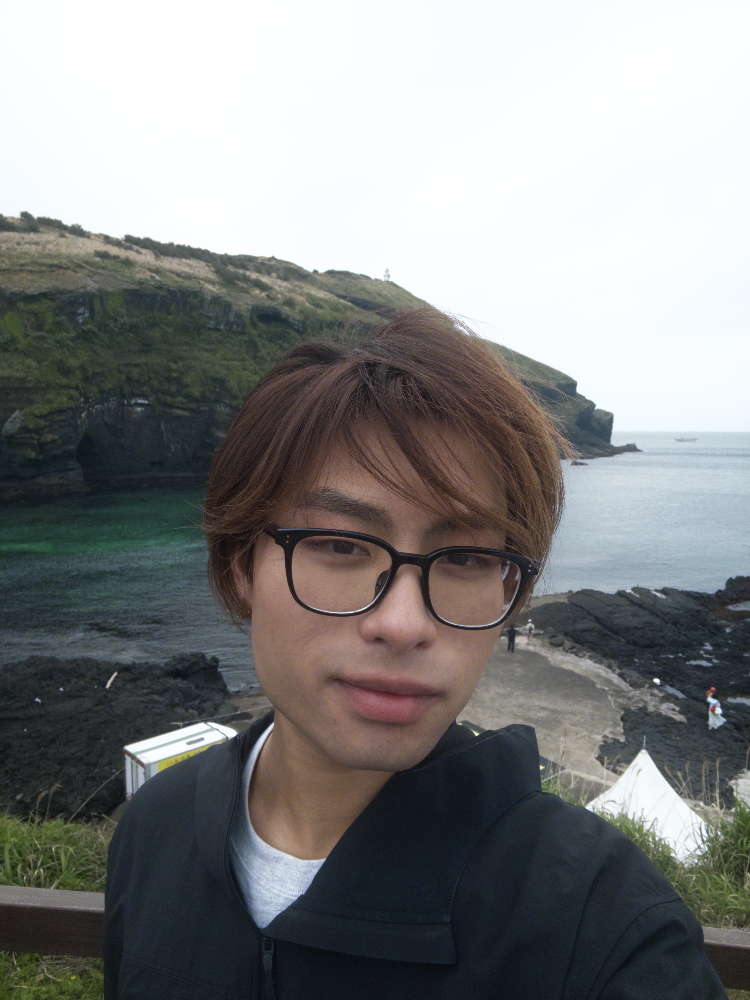
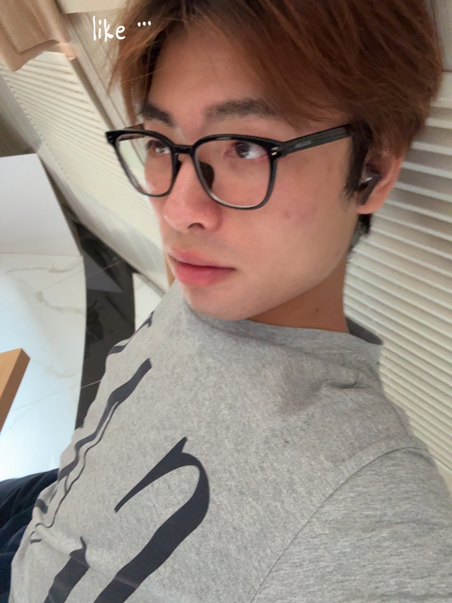

ART PROJECT

01 / 2025Explore ↗
失樂園
Paradisus missus

Paradisus missus
León (Ma Haitong) is a bachelor student of BLCU who majors in Communication Studies.
That's all I have to say. If you want to know more, please explore.

